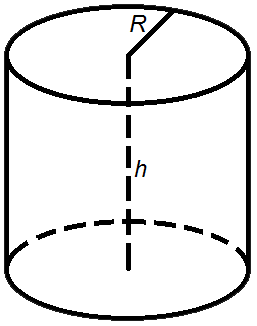

Циліндр - геометричне тіло, обмежене циліндричною поверхнею і двома паралельними площинами (основами), що перетинають її. Циліндр називається круговим, якщо його основа – круг. Відстань між основами – висота циліндра.
Формула для обрахунку площі бічної поверхні циліндра
S = 2 π R h
Формула для обрахунку площі повної поверхні циліндра
S = 2 π R h + 2 π R 2 = 2 π R(R + h)
де S - площа,
R - радіус циліндра,
h - висота циліндра,
π = 3.141592.